Overview
This project hosts a small website on Amazon EC2 behind an Application Load Balancer (ALB). Two servers, Red and Blue, serve different pages. The ALB reads each request and forwards it to the correct target group.
Path-based routing (also called URL-based routing) uses the URL path, such as /red or /blue. Host-based routing uses the Host header, so one load balancer can serve several domains or subdomains.
Goals
- Store the website files in S3 and pull them onto each server at boot with user data.
- Give EC2 read access to S3 through an IAM role, with no access keys.
- Run two servers in two Availability Zones.
- Create target groups with custom health checks.
- Route traffic with path-based rules, then optionally with host-based rules.
Architecture
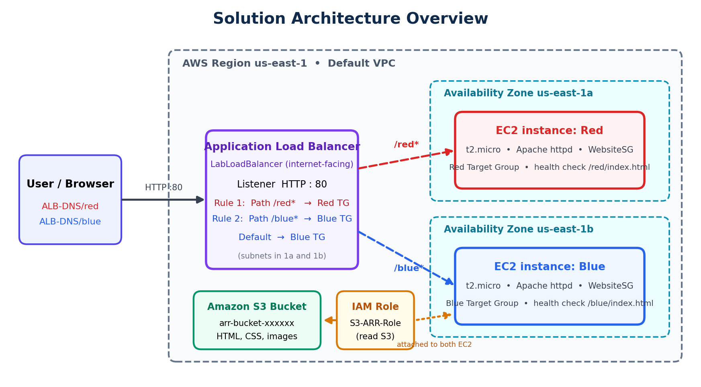
How a request flows
- The user opens
http://<ALB-DNS-name>/redin a browser. - The request reaches the ALB listener on HTTP port 80.
- The ALB checks listener rules from the lowest priority number to the highest.
- The matching rule forwards the request to a target group.
- The ALB sends the request to a healthy instance in that group, and Apache returns the page.
Path-based routing
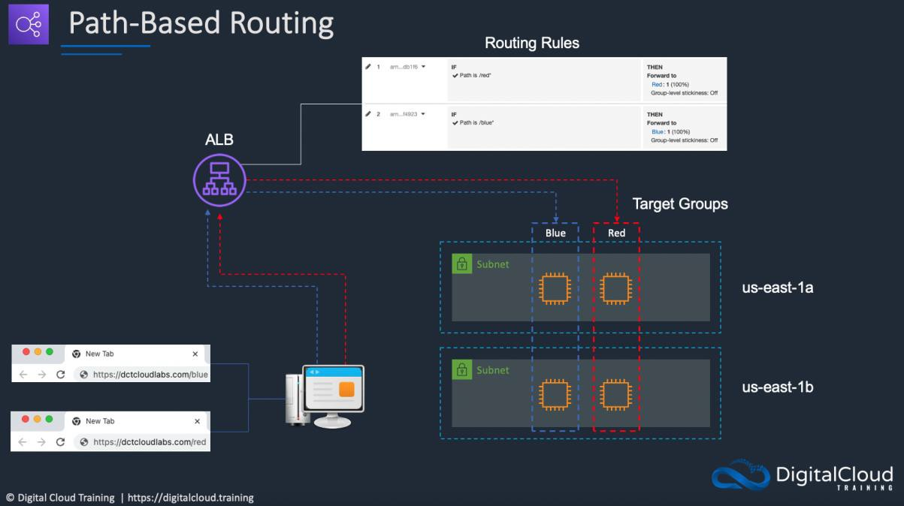
Host-based routing
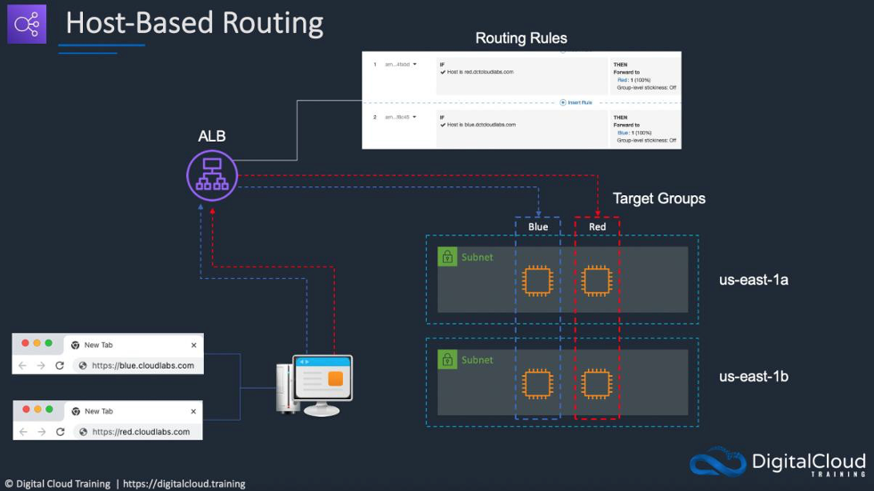
Path-based compared with host-based
| Path-based | Host-based | |
|---|---|---|
| Routing key | URL path (/red*, /blue*) | Host header (red.<domain>, blue.<domain>) |
| Rule condition | Path | HTTP host header |
| Good for | Sections of one site | Separate sites or subdomains |
| Extra hostnames needed | No | Yes |
| Priorities | Red 1, Blue 2 | Red 1, Blue 2 |
Resources
| Resource | Name | Purpose |
|---|---|---|
| S3 bucket | arr-bucket-xxxxxx | Stores the web pages and assets |
| Security group | WebsiteSG | Allows inbound HTTP (TCP 80) from 0.0.0.0/0 |
| IAM policy | S3-ARR-Policy | Read access to the bucket |
| IAM role | S3-ARR-Role | Instance profile for both EC2 instances |
| EC2 instance | Red (us-east-1a) | Apache server for /red |
| EC2 instance | Blue (us-east-1b) | Apache server for /blue |
| Target groups | Red, Blue | Health checks on /red/index.html and /blue/index.html |
| Load balancer | LabLoadBalancer | Internet-facing ALB, listener HTTP:80 |
Prerequisites
- An AWS account. The Free Tier covers EC2 and S3 for a short lab, but check current ALB pricing before you start.
- Basic familiarity with the AWS Management Console.
- The lab file
advanced-request-routing-code.zip(web pages, user data scripts andbucket-permissions.json). It is course material and is not included in this repository.
Deployment steps
Work in region us-east-1. Follow the phases in order.
Phase 1 Create the S3 bucket and upload the code
- Open the S3 console and click Create bucket.
- Enter a globally unique name such as
arr-bucket-123456. Write it down. - Click Create bucket.
- Extract
advanced-request-routing-code.zip. - Upload all files except the user data files and
bucket-permissions.json.
Phase 2 Create the security group and IAM role
Security group WebsiteSG
- In the EC2 console, open Network & Security > Security Groups and click Create security group.
- Name and description:
WebsiteSG. - Add one inbound rule: HTTP, TCP, port 80, source Anywhere-IPv4 (0.0.0.0/0).
- Click Create security group.
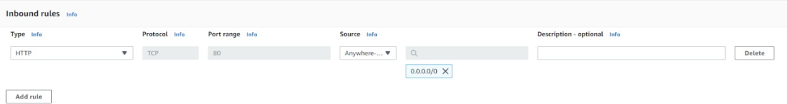
IAM policy and role
- In the IAM console, open Policies > Create policy and choose the JSON tab.
- Paste
bucket-permissions.json(or the example inpolicies/) and replaceYOUR-BUCKET-ARNwith your bucket ARN. - Name the policy
S3-ARR-Policyand create it. - Open Roles > Create role, choose EC2 as the trusted entity and click Next.
- Attach
S3-ARR-Policy, name the roleS3-ARR-Roleand create it.
Example policy (least privilege, read-only on one bucket):
{
"Version": "2012-10-17",
"Statement": [
{ "Sid": "AllowReadWebsiteFiles", "Effect": "Allow",
"Action": ["s3:GetObject"], "Resource": "YOUR-BUCKET-ARN/*" },
{ "Sid": "AllowListBucket", "Effect": "Allow",
"Action": ["s3:ListBucket"], "Resource": "YOUR-BUCKET-ARN" }
]
}Phase 3 Launch the Red and Blue EC2 instances
Red instance
- In the EC2 console, click Launch instance.
- Name it
Red, choose an Amazon Linux AMI and instance type t2.micro. - Key pair: Proceed without a key pair.
- Network settings: choose
WebsiteSGand the subnet in us-east-1a. - Under Advanced details, set IAM instance profile to
S3-ARR-Role. - Paste the Red user data script into User data, with
YOUR-BUCKET-NAMEreplaced by your bucket name. - Click Launch instance.
The Red user data script installs Apache, starts it, and copies the page files from S3:
#!/bin/bash
yum update -y
yum install -y httpd
systemctl start httpd
systemctl enable httpd
mkdir /var/www/html/red
# populate /red
cd /var/www/html/red
aws s3 cp s3://YOUR-BUCKET-NAME/hw-red.css ./
aws s3 cp s3://YOUR-BUCKET-NAME/hw-red-py.css ./
aws s3 cp s3://YOUR-BUCKET-NAME/python.png ./
aws s3 cp s3://YOUR-BUCKET-NAME/apache.svg ./
aws s3 cp s3://YOUR-BUCKET-NAME/red-index.html ./index.html
# populate the web root (replaces the Apache default page)
cd /var/www/html
aws s3 cp s3://YOUR-BUCKET-NAME/hw-red.css ./
aws s3 cp s3://YOUR-BUCKET-NAME/hw-red-py.css ./
aws s3 cp s3://YOUR-BUCKET-NAME/python.png ./
aws s3 cp s3://YOUR-BUCKET-NAME/apache.svg ./
aws s3 cp s3://YOUR-BUCKET-NAME/red-root-index.html ./index.html
systemctl restart httpd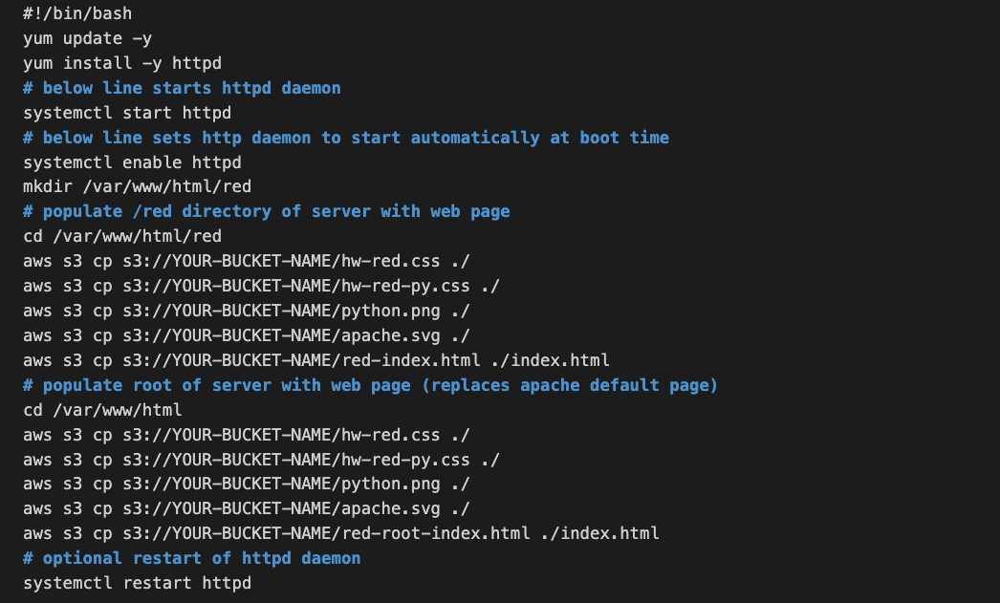
Blue instance
Repeat the steps with these changes: name it Blue, use the subnet in us-east-1b, and use the user-data-blue script from the lab zip (bucket name replaced). Keep the same WebsiteSG and S3-ARR-Role.
/red or /blue added. The matching page should load.Phase 4 Create the target groups
| Setting | Red | Blue |
|---|---|---|
| Target type | Instances | Instances |
| Name | Red | Blue |
| Port | 80 | 80 |
| Health check path | /red/index.html | /blue/index.html |
| Instance to register | Red | Blue |
For each group: open Load Balancing > Target Groups > Create target group, apply the settings, click Next, select the instance, click Include as pending below, then create the group.
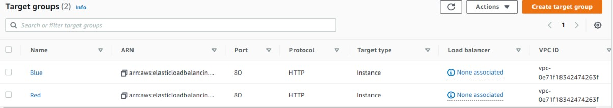
Phase 5 Create the Application Load Balancer
- In the EC2 console sidebar, open Load Balancers > Create load balancer and choose Application Load Balancer.
- Name it
LabLoadBalancerand keep the scheme Internet-facing. - Network mapping: select us-east-1a and us-east-1b.
- Security group:
WebsiteSG. - Listener: HTTP : 80, default action Forward to the
Bluetarget group. - Click Create load balancer and wait until the state changes from Provisioning to Active.
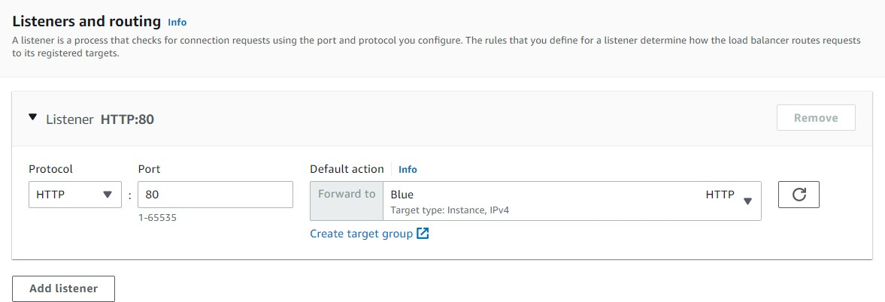
Phase 6 Configure path-based routing rules
- Open the load balancer and go to Listeners and rules.
- Tick the HTTP:80 listener, then choose Manage rules > Add rule.
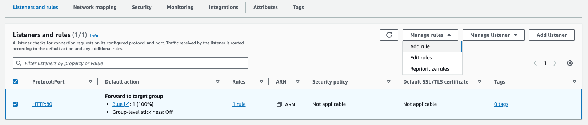
Red rule
- Skip name and tags and click Next.
- Condition: Path, value
/red*. - Action: Forward to target groups, select
Red. - Priority: 1. Save.
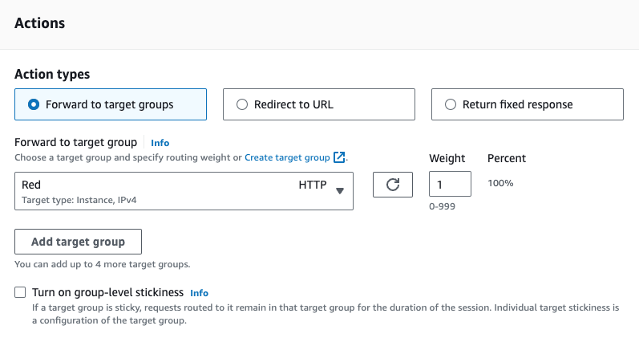
Blue rule
- Condition: Path, value
/blue*. - Action: Forward to target groups, select
Blue. - Priority: 2. Save.
The listener should now show three rules. Anything that matches neither path goes to Blue through the default action.
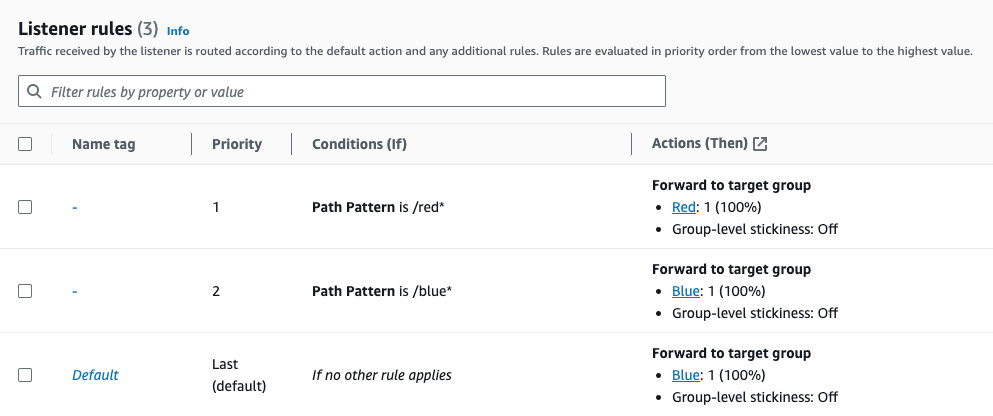
http://<ALB-DNS-name>/red and http://<ALB-DNS-name>/blue. Each should show its own coloured page.Phase 7 Configure host-based routing (optional)
Use this phase to switch from path-based to host-based rules. Only the listener rules change.
- Open the listener and choose Manage rules > Edit rules. Delete the two path rules.
- Add a rule: condition HTTP host header =
red.yourdomainname.com, forward toRed, priority 1. - Add a rule: condition HTTP host header =
blue.yourdomainname.com, forward toBlue, priority 2.
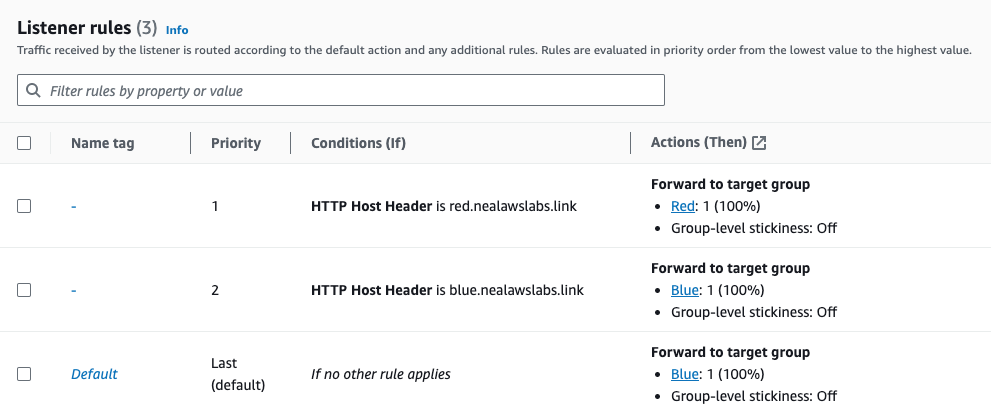
The rules match on the Host header only, so you can test them by sending the header yourself:
curl -H "Host: red.yourdomainname.com" http://<ALB-DNS-name>/
curl -H "Host: blue.yourdomainname.com" http://<ALB-DNS-name>/Verification
| Check | Expected result |
|---|---|
| S3 bucket | Web files uploaded (user data files and bucket-permissions.json excluded) |
| EC2 instances | Red in us-east-1a and Blue in us-east-1b are running with S3-ARR-Role |
| Target groups | Both targets show healthy |
| ALB | State is Active; listener HTTP:80 with default action to Blue |
/red | Red page |
/blue | Blue page |
/ | Blue page (default action) |
curl -I http://<ALB-DNS-name>/red
curl -I http://<ALB-DNS-name>/blueTroubleshooting
A target is unhealthy
- Check the health check path:
/red/index.htmlfor Red,/blue/index.htmlfor Blue. - On the instance, run
systemctl status httpd. - Confirm the files exist:
ls /var/www/html/red. - Confirm
WebsiteSGallows HTTP 80. - New targets can take a minute or two to pass the check.
The ALB returns 502 or 503
A 503 usually means the target group has no healthy targets. Fix the health problem first. A 502 means the target closed the connection or sent an invalid response; check that Apache is running.
The instance shows the default Apache page
The files were not copied from S3. Check that:
YOUR-BUCKET-NAMEwas replaced and spelled correctly.- The
S3-ARR-Roleinstance profile is attached. - The policy has the correct bucket ARN.
- The file names in the script exist in the bucket.
Read the boot log on the instance:
sudo tail -50 /var/log/cloud-init-output.log
aws s3 ls s3://<your-bucket-name>/The connection times out
Check that the security group allows inbound TCP 80 and that you are using http://. The lab has no HTTPS listener.
Path rules do not match
Use /red* and /blue* with the asterisk, keep priorities unique, and remember that unmatched requests go to Blue through the default action, so a wrong path can still show the Blue page.
Host rules do not match
The host header must equal the rule value exactly. Test with curl -H "Host: ...". If you delete the path rules and add no host rules, everything goes to the default (Blue).
Clean up
The load balancer, EC2 instances and S3 bucket can incur charges. Delete in this order to avoid dependency errors:
- Load balancer
LabLoadBalancer - Target groups
RedandBlue - EC2 instances
RedandBlue(terminate) - Security group
WebsiteSG - S3 bucket (empty it, then delete it)
- Optional: IAM role
S3-ARR-Roleand policyS3-ARR-Policy
Security notes
WebsiteSGis open to the internet on port 80 because this is a public demo. Do not reuse that rule for private workloads.- The instances use an IAM role, so no access keys are stored on them.
- The policy allows only reading one bucket.
- The listener uses plain HTTP. For production, add an HTTPS listener with an ACM certificate and redirect HTTP to HTTPS.
- Give instances a separate security group that accepts traffic only from the ALB, and place them in private subnets.
What I learned
- One ALB can front several applications by routing on path or host header.
- Listener rules run in priority order, and the default action catches everything else.
- A health check path must exist on the instance or the target stays unhealthy.
- IAM roles are the safe way to let EC2 read from S3.
- Using two Availability Zones improves availability.
Credits
The lab guide, code files, routing diagrams and console screenshots come from the Digital Cloud Training Cloud Mastery Bootcamp. The overview diagram and this documentation were written by Rutuja Naik.